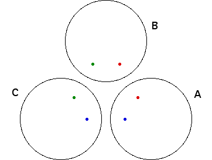

| Repeating the introduction, the limit set for two circles is two points, so the limit set for three circles should be three points, right? |
| Call the circles A, B, and C. |
| If we invert in just A and C, then as we have seen, the limit set is two points, the blue points in the picture. |
| If we invert in just A and B, the limit set is two points, the red points in the picture. |
| If we invert in just B and C, the limit set is two points, the green points in the picture. |
|  |
| So the limit set must be at least these six points. But is that all? |
Return to Limit Sets and Inversion.